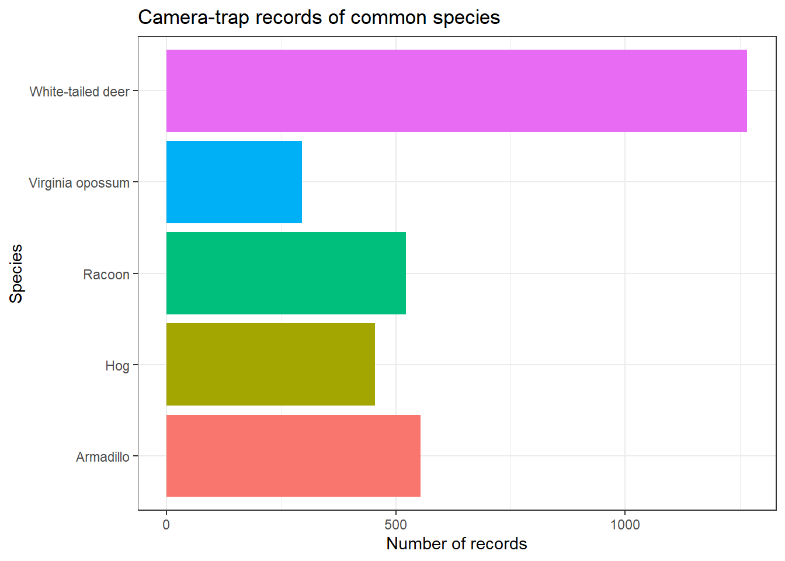

library(tidyverse)Module 7: Data Manipulation with tidyverse
Introduction
So far, we have learned how to:
- create objects,
- work with different data structures,
- import data,
- inspect datasets,
- and visualize information.
But real datasets rarely arrive exactly in the format we need.
Before analyzing data, we often need to:
- select variables,
- filter observations,
- rename columns,
- create new variables,
- count observations,
- group data,
- and calculate summaries.
This process is often called data manipulation or data wrangling.
In this module, we will use tools from the tidyverse, particularly the package dplyr, to manipulate our camera-trap data.
What is the tidyverse?
The tidyverse is a collection of R packages designed to work together for common data-science tasks.

We have already used some of them:
readr → importing and exporting data
ggplot2 → data visualization
dplyr → data manipulationThere are several others, but you do not need to learn all of them at once.
For this module, we will focus primarily on:
dplyrWhen we load:
the most commonly used tidyverse packages, including dplyr, are loaded automatically.
Let’s get started
Open your intro-r-course project and create a new R script.
Save it inside the scripts folder as:
module-07.RLoad the tidyverse:
library(tidyverse)Then import our camera-trap record table:
recordTable <- read_csv(
"data/recordTable.csv"
)Let’s remind ourselves what the dataset looks like:
dim(recordTable)[1] 3898 25names(recordTable) [1] "RootFolder" "File" "RelativePath"
[4] "Station" "Camera" "DateTime"
[7] "Species" "N_individuals" "Sex"
[10] "Age" "Identifier" "Comments"
[13] "Favorite" "DateTime_original" "year"
[16] "date_shift" "n_images" "Date"
[19] "Time" "delta.time.secs" "delta.time.mins"
[22] "delta.time.hours" "delta.time.days" "DateTime2"
[25] "Date2" head(recordTable)# A tibble: 6 × 25
RootFolder File RelativePath Station Camera DateTime Species
<chr> <chr> <chr> <chr> <chr> <dttm> <chr>
1 Field Station 2… DSCF… "Control 0\… Contro… Contr… 2025-05-15 14:53:20 White-…
2 Field Station 2… DSCF… "Control 1\… Contro… Contr… 2025-06-05 04:25:19 Armadi…
3 Field Station 2… DSCF… "Control 1\… Contro… Contr… 2025-06-26 07:39:44 Armadi…
4 Field Station 2… DSCF… "Control 1\… Contro… Contr… 2025-06-26 08:07:20 Armadi…
5 Field Station 2… DSCF… "Control 1\… Contro… Contr… 2025-06-26 08:39:46 Armadi…
6 Field Station 2… DSCF… "Control 1\… Contro… Contr… 2025-07-20 01:11:11 Armadi…
# ℹ 18 more variables: N_individuals <dbl>, Sex <chr>, Age <chr>,
# Identifier <chr>, Comments <chr>, Favorite <lgl>, DateTime_original <dttm>,
# year <dbl>, date_shift <dbl>, n_images <dbl>, Date <date>, Time <time>,
# delta.time.secs <dbl>, delta.time.mins <dbl>, delta.time.hours <dbl>,
# delta.time.days <dbl>, DateTime2 <dttm>, Date2 <date>
Download the example data
If you do not already have the dataset from Module 5, you can download it here:
Think of dplyr as a set of verbs
Many dplyr functions are named after the action they perform.
Some of the most useful are:
| Function | What does it do? |
|---|---|
select() |
Select columns |
filter() |
Select rows |
arrange() |
Sort rows |
rename() |
Rename columns |
mutate() |
Create or modify columns |
count() |
Count observations |
group_by() |
Create groups |
summarise() |
Calculate summaries |
You will use these functions again and again when working with data in R.
Selecting columns with select()
Our recordTable contains many variables.
Sometimes we only need a few of them.
For example:
recordTable |>
select(
Station,
Species,
N_individuals,
Age,
n_images
)# A tibble: 3,898 × 5
Station Species N_individuals Age n_images
<chr> <chr> <dbl> <chr> <dbl>
1 Control 0 White-tailed deer 0 Unknown 1
2 Control 1 Armadillo 1 Adult 2
3 Control 1 Armadillo 2 Unknown 2
4 Control 1 Armadillo 1 Unknown 1
5 Control 1 Armadillo 1 Unknown 1
6 Control 1 Armadillo 1 Adult 2
7 Control 1 Armadillo 1 Adult 1
8 Control 1 Bug 1 Adult 1
9 Control 1 Bug 1 Adult 2
10 Control 1 Bug 1 Adult 1
# ℹ 3,888 more rowsThis creates a dataset containing only those columns.
We can save the result:
selected_records <- recordTable |>
select(
Station,
Species,
N_individuals,
Age,
n_images
)Now:
names(selected_records)[1] "Station" "Species" "N_individuals" "Age"
[5] "n_images" contains only the columns we selected.
Removing columns
We can also use select() to remove columns.
For example:
recordTable |>
select(
-RootFolder,
-RelativePath
)# A tibble: 3,898 × 23
File Station Camera DateTime Species N_individuals Sex Age
<chr> <chr> <chr> <dttm> <chr> <dbl> <chr> <chr>
1 DSCF000… Contro… Contr… 2025-05-15 14:53:20 White-… 0 <NA> Unkn…
2 DSCF013… Contro… Contr… 2025-06-05 04:25:19 Armadi… 1 Unkn… Adult
3 DSCF042… Contro… Contr… 2025-06-26 07:39:44 Armadi… 2 Unkn… Unkn…
4 DSCF042… Contro… Contr… 2025-06-26 08:07:20 Armadi… 1 Unkn… Unkn…
5 DSCF042… Contro… Contr… 2025-06-26 08:39:46 Armadi… 1 Unkn… Unkn…
6 DSCF040… Contro… Contr… 2025-07-20 01:11:11 Armadi… 1 Unkn… Adult
7 DSCF041… Contro… Contr… 2025-07-20 02:11:12 Armadi… 1 Unkn… Adult
8 DSCF016… Contro… Contr… 2025-06-09 13:26:30 Bug 1 Unkn… Adult
9 DSCF025… Contro… Contr… 2025-07-06 13:27:56 Bug 1 Unkn… Adult
10 DSCF025… Contro… Contr… 2025-07-06 14:24:44 Bug 1 Unkn… Adult
# ℹ 3,888 more rows
# ℹ 15 more variables: Identifier <chr>, Comments <chr>, Favorite <lgl>,
# DateTime_original <dttm>, year <dbl>, date_shift <dbl>, n_images <dbl>,
# Date <date>, Time <time>, delta.time.secs <dbl>, delta.time.mins <dbl>,
# delta.time.hours <dbl>, delta.time.days <dbl>, DateTime2 <dttm>,
# Date2 <date>The - means:
Everything except these columns.
Selecting by data type
We can also select columns based on their type.
For example:
recordTable |>
select(where(is.numeric))# A tibble: 3,898 × 8
N_individuals year date_shift n_images delta.time.secs delta.time.mins
<dbl> <dbl> <dbl> <dbl> <dbl> <dbl>
1 0 2025 NA 1 0 0
2 1 2025 89 2 0 0
3 2 2025 89 2 1826065 30434.
4 1 2025 89 1 1656 27.6
5 1 2025 89 1 1946 32.4
6 1 2025 89 2 2046685 34111.
7 1 2025 89 1 3601 60
8 1 2025 89 1 0 0
9 1 2025 89 2 2332886 38881.
10 1 2025 89 1 3408 56.8
# ℹ 3,888 more rows
# ℹ 2 more variables: delta.time.hours <dbl>, delta.time.days <dbl>returns only numeric columns.
Tip
You do not need to memorize every option available in select().
Start with selecting columns by name. The more advanced selection tools become useful as your datasets become larger.
Filtering rows with filter()
While select() works with columns, filter() works with rows.
For example, let’s select only records of White-tailed deer:
deer_records <- recordTable |>
filter(
Species == "White-tailed deer"
)Check:
unique(deer_records$Species)[1] "White-tailed deer"All observations now correspond to the same species.
Filtering numeric values
We can also use relational operators.
For example, records containing more than one individual:
recordTable |>
filter(
N_individuals > 1
)# A tibble: 244 × 25
RootFolder File RelativePath Station Camera DateTime Species
<chr> <chr> <chr> <chr> <chr> <dttm> <chr>
1 Field Station … DSCF… "Control 1\… Contro… Contr… 2025-06-26 07:39:44 Armadi…
2 Field Station … DSCF… "Control 1\… Contro… Contr… 2025-07-28 16:48:44 Bug
3 Field Station … DSCF… "Control 1\… Contro… Contr… 2025-07-29 15:10:02 Bug
4 Field Station … DSCF… "Control 1\… Contro… Contr… 2025-07-29 16:08:40 Bug
5 Field Station … DSCF… "Control 1\… Contro… Contr… 2025-07-30 15:38:00 Bug
6 Field Station … DSCF… "Control 1\… Contro… Contr… 2025-06-20 06:56:25 White-…
7 Field Station … DSCF… "Control 1\… Contro… Contr… 2025-06-20 07:56:26 White-…
8 Field Station … DSCF… "Control 1\… Contro… Contr… 2025-06-28 12:48:34 White-…
9 Field Station … DSCF… "Control 2\… Contro… Contr… 2025-04-17 02:47:44 Armadi…
10 Field Station … DSCF… "Control 2\… Contro… contr… 2025-09-06 23:31:16 Bug
# ℹ 234 more rows
# ℹ 18 more variables: N_individuals <dbl>, Sex <chr>, Age <chr>,
# Identifier <chr>, Comments <chr>, Favorite <lgl>, DateTime_original <dttm>,
# year <dbl>, date_shift <dbl>, n_images <dbl>, Date <date>, Time <time>,
# delta.time.secs <dbl>, delta.time.mins <dbl>, delta.time.hours <dbl>,
# delta.time.days <dbl>, DateTime2 <dttm>, Date2 <date>Remember the operators we learned earlier:
> greater than
>= greater than or equal to
< less than
<= less than or equal to
== equal to
!= different fromMultiple filtering conditions
We can combine conditions.
For example:
recordTable |>
filter(
Species == "White-tailed deer",
N_individuals > 1
)# A tibble: 86 × 25
RootFolder File RelativePath Station Camera DateTime Species
<chr> <chr> <chr> <chr> <chr> <dttm> <chr>
1 Field Station … DSCF… "Control 1\… Contro… Contr… 2025-06-20 06:56:25 White-…
2 Field Station … DSCF… "Control 1\… Contro… Contr… 2025-06-20 07:56:26 White-…
3 Field Station … DSCF… "Control 1\… Contro… Contr… 2025-06-28 12:48:34 White-…
4 Field Station … DSCF… "Control 2\… Contro… Contr… 2025-04-24 15:32:46 White-…
5 Field Station … DSCF… "Control 2\… Contro… Contr… 2025-04-24 16:55:22 White-…
6 Field Station … DSCF… "Control 2\… Contro… Contr… 2025-05-05 14:58:46 White-…
7 Field Station … DSCF… "Control 2\… Contro… contr… 2025-06-06 20:44:02 White-…
8 Field Station … DSCF… "Control 2\… Contro… contr… 2025-06-06 21:44:04 White-…
9 Field Station … DSCF… "Control 2\… Contro… contr… 2025-06-07 02:31:38 White-…
10 Field Station … DSCF… "Control 2\… Contro… contr… 2025-06-07 16:02:24 White-…
# ℹ 76 more rows
# ℹ 18 more variables: N_individuals <dbl>, Sex <chr>, Age <chr>,
# Identifier <chr>, Comments <chr>, Favorite <lgl>, DateTime_original <dttm>,
# year <dbl>, date_shift <dbl>, n_images <dbl>, Date <date>, Time <time>,
# delta.time.secs <dbl>, delta.time.mins <dbl>, delta.time.hours <dbl>,
# delta.time.days <dbl>, DateTime2 <dttm>, Date2 <date>When conditions are separated by commas inside filter(), both conditions must be satisfied.
This is equivalent to using:
&for AND.
We can also select several species using %in%.
recordTable |>
filter(
Species %in% c(
"White-tailed deer",
"Armadillo",
"Racoon"
)
)# A tibble: 2,342 × 25
RootFolder File RelativePath Station Camera DateTime Species
<chr> <chr> <chr> <chr> <chr> <dttm> <chr>
1 Field Station … DSCF… "Control 0\… Contro… Contr… 2025-05-15 14:53:20 White-…
2 Field Station … DSCF… "Control 1\… Contro… Contr… 2025-06-05 04:25:19 Armadi…
3 Field Station … DSCF… "Control 1\… Contro… Contr… 2025-06-26 07:39:44 Armadi…
4 Field Station … DSCF… "Control 1\… Contro… Contr… 2025-06-26 08:07:20 Armadi…
5 Field Station … DSCF… "Control 1\… Contro… Contr… 2025-06-26 08:39:46 Armadi…
6 Field Station … DSCF… "Control 1\… Contro… Contr… 2025-07-20 01:11:11 Armadi…
7 Field Station … DSCF… "Control 1\… Contro… Contr… 2025-07-20 02:11:12 Armadi…
8 Field Station … DSCF… "Control 1\… Contro… Contr… 2025-06-07 23:35:55 Racoon
9 Field Station … DSCF… "Control 1\… Contro… Contr… 2025-07-05 06:20:42 Racoon
10 Field Station … DSCF… "Control 1\… Contro… Contr… 2025-07-09 20:38:20 Racoon
# ℹ 2,332 more rows
# ℹ 18 more variables: N_individuals <dbl>, Sex <chr>, Age <chr>,
# Identifier <chr>, Comments <chr>, Favorite <lgl>, DateTime_original <dttm>,
# year <dbl>, date_shift <dbl>, n_images <dbl>, Date <date>, Time <time>,
# delta.time.secs <dbl>, delta.time.mins <dbl>, delta.time.hours <dbl>,
# delta.time.days <dbl>, DateTime2 <dttm>, Date2 <date>The %in% operator is extremely useful when we want observations belonging to several categories.
Note
Remember the difference:
Species == "Armadillo"asks for one specific value.
Species %in% c(
"Armadillo",
"Racoon",
"Hog"
)asks whether Species belongs to a group of possible values.
Missing values
We can also use filter() to investigate missing information.
For example:
recordTable |>
filter(
is.na(Age)
)# A tibble: 87 × 25
RootFolder File RelativePath Station Camera DateTime Species
<chr> <chr> <chr> <chr> <chr> <dttm> <chr>
1 Field Station … DSCF… "Control 1\… Contro… Contr… 2025-07-05 06:20:42 Racoon
2 Field Station … DSCF… "Control 1\… Contro… Contr… 2025-06-28 12:48:34 White-…
3 Field Station … DSCF… "Control 2\… Contro… Contr… 2025-07-13 02:54:18 Bug
4 Field Station … DSCF… "Control 2\… Contro… Contr… 2025-07-21 00:40:56 Hog
5 Field Station … DSCF… "Control 2\… Contro… Contr… 2025-07-21 01:40:40 Hog
6 Field Station … DSCF… "Control 2\… Contro… Contr… 2025-07-27 19:58:32 Hog
7 Field Station … DSCF… "Control 2\… Contro… Contr… 2025-07-27 20:58:32 Hog
8 Field Station … DSCF… "Control 2\… Contro… Contr… 2025-07-30 10:12:50 Hog
9 Field Station … DSCF… "Control 2\… Contro… contr… 2025-08-10 03:54:34 Hog
10 Field Station … DSCF… "Control 2\… Contro… contr… 2025-08-10 04:22:32 Hog
# ℹ 77 more rows
# ℹ 18 more variables: N_individuals <dbl>, Sex <chr>, Age <chr>,
# Identifier <chr>, Comments <chr>, Favorite <lgl>, DateTime_original <dttm>,
# year <dbl>, date_shift <dbl>, n_images <dbl>, Date <date>, Time <time>,
# delta.time.secs <dbl>, delta.time.mins <dbl>, delta.time.hours <dbl>,
# delta.time.days <dbl>, DateTime2 <dttm>, Date2 <date>This returns records where Age is missing.
To keep records where Age is not missing:
recordTable |>
filter(
!is.na(Age)
)# A tibble: 3,811 × 25
RootFolder File RelativePath Station Camera DateTime Species
<chr> <chr> <chr> <chr> <chr> <dttm> <chr>
1 Field Station … DSCF… "Control 0\… Contro… Contr… 2025-05-15 14:53:20 White-…
2 Field Station … DSCF… "Control 1\… Contro… Contr… 2025-06-05 04:25:19 Armadi…
3 Field Station … DSCF… "Control 1\… Contro… Contr… 2025-06-26 07:39:44 Armadi…
4 Field Station … DSCF… "Control 1\… Contro… Contr… 2025-06-26 08:07:20 Armadi…
5 Field Station … DSCF… "Control 1\… Contro… Contr… 2025-06-26 08:39:46 Armadi…
6 Field Station … DSCF… "Control 1\… Contro… Contr… 2025-07-20 01:11:11 Armadi…
7 Field Station … DSCF… "Control 1\… Contro… Contr… 2025-07-20 02:11:12 Armadi…
8 Field Station … DSCF… "Control 1\… Contro… Contr… 2025-06-09 13:26:30 Bug
9 Field Station … DSCF… "Control 1\… Contro… Contr… 2025-07-06 13:27:56 Bug
10 Field Station … DSCF… "Control 1\… Contro… Contr… 2025-07-06 14:24:44 Bug
# ℹ 3,801 more rows
# ℹ 18 more variables: N_individuals <dbl>, Sex <chr>, Age <chr>,
# Identifier <chr>, Comments <chr>, Favorite <lgl>, DateTime_original <dttm>,
# year <dbl>, date_shift <dbl>, n_images <dbl>, Date <date>, Time <time>,
# delta.time.secs <dbl>, delta.time.mins <dbl>, delta.time.hours <dbl>,
# delta.time.days <dbl>, DateTime2 <dttm>, Date2 <date>Here:
!means NOT.
So:
!is.na(Age)means:
Age is not missing.
Sorting rows with arrange()
Sometimes we want to sort a dataset.
For example:
recordTable |>
arrange(N_individuals)# A tibble: 3,898 × 25
RootFolder File RelativePath Station Camera DateTime Species
<chr> <chr> <chr> <chr> <chr> <dttm> <chr>
1 Field Station … DSCF… "Control 0\… Contro… Contr… 2025-05-15 14:53:20 White-…
2 Field Station … DSCF… "Control 2\… Contro… contr… 2025-09-01 21:09:32 Bug
3 Field Station … DSCF… "Control 2\… Contro… contr… 2025-09-01 22:09:34 Bug
4 Field Station … DSCF… "Control 2\… Contro… contr… 2025-09-11 20:27:54 Bug
5 Field Station … DSCF… "Control 2\… Contro… contr… 2025-09-11 21:27:54 Bug
6 Field Station … DSCF… "Control 2\… Contro… Contr… 2025-05-13 16:46:58 Human
7 Field Station … DSCF… "Control 4\… Contro… Contr… 2025-06-03 13:49:55 Human
8 Field Station … DSCF… "Control 4\… Contro… Contr… 2025-06-03 16:30:05 Human
9 Field Station … DSCF… "Control 4\… Contro… Contr… 2025-06-08 18:05:55 Human
10 Field Station … DSCF… "Control 4\… Contro… Contr… 2025-06-18 08:58:30 Wild t…
# ℹ 3,888 more rows
# ℹ 18 more variables: N_individuals <dbl>, Sex <chr>, Age <chr>,
# Identifier <chr>, Comments <chr>, Favorite <lgl>, DateTime_original <dttm>,
# year <dbl>, date_shift <dbl>, n_images <dbl>, Date <date>, Time <time>,
# delta.time.secs <dbl>, delta.time.mins <dbl>, delta.time.hours <dbl>,
# delta.time.days <dbl>, DateTime2 <dttm>, Date2 <date>sorts observations from the smallest to the largest number of individuals.
To reverse the order:
recordTable |>
arrange(
desc(N_individuals)
)# A tibble: 3,898 × 25
RootFolder File RelativePath Station Camera DateTime Species
<chr> <chr> <chr> <chr> <chr> <dttm> <chr>
1 Field Station … DSCF… "Control 2\… Contro… contr… 2025-06-12 20:23:28 Hog
2 Field Station … DSCF… "Control 2\… Contro… contr… 2025-09-25 09:41:08 Hog
3 Field Station … DSCF… "Control 2\… Contro… contr… 2025-06-12 19:23:27 Hog
4 Field Station … DSCF… "Control 2\… Contro… contr… 2025-06-20 18:25:04 Hog
5 Field Station … DSCF… "Control 2\… Contro… Contr… 2025-07-27 20:58:32 Hog
6 Field Station … DSCF… "Control 2\… Contro… contr… 2025-09-29 03:11:16 Hog
7 Field Station … DSCF… "Control 2\… Contro… contr… 2025-06-22 17:58:00 White-…
8 Field Station … DSCF… "Control 2\… Contro… contr… 2025-06-10 16:11:14 Hog
9 Field Station … DSCF… "Control 2\… Contro… contr… 2025-06-20 17:25:03 Hog
10 Field Station … DSCF… "Control 2\… Contro… contr… 2025-06-04 14:41:56 Human
# ℹ 3,888 more rows
# ℹ 18 more variables: N_individuals <dbl>, Sex <chr>, Age <chr>,
# Identifier <chr>, Comments <chr>, Favorite <lgl>, DateTime_original <dttm>,
# year <dbl>, date_shift <dbl>, n_images <dbl>, Date <date>, Time <time>,
# delta.time.secs <dbl>, delta.time.mins <dbl>, delta.time.hours <dbl>,
# delta.time.days <dbl>, DateTime2 <dttm>, Date2 <date>Now the records containing the largest number of individuals appear first.
We can also sort using several variables:
recordTable |>
arrange(
Species,
desc(N_individuals)
)# A tibble: 3,898 × 25
RootFolder File RelativePath Station Camera DateTime Species
<chr> <chr> <chr> <chr> <chr> <dttm> <chr>
1 Field Station … DSCF… "Pine Canop… Pine C… Pine … 2025-06-22 07:48:45 Armadi…
2 Field Station … DSCF… "Control 1\… Contro… Contr… 2025-06-26 07:39:44 Armadi…
3 Field Station … DSCF… "Control 2\… Contro… Contr… 2025-04-17 02:47:44 Armadi…
4 Field Station … DSCF… "Control 3\… Contro… Contr… 2025-07-08 03:48:50 Armadi…
5 Field Station … DSCF… "Control 3\… Contro… Contr… 2025-09-10 23:41:46 Armadi…
6 Field Station … DSCF… "Control 4\… Contro… Contr… 2025-07-18 04:54:14 Armadi…
7 Field Station … DSCF… "Fish 0\\Fi… Fish 0 Fish … 2025-06-14 17:49:00 Armadi…
8 Field Station … DSCF… "Fish 0\\Fi… Fish 0 Fish … 2025-06-25 08:04:08 Armadi…
9 Field Station … DSCF… "Fish 1\\Fi… Fish 1 Fish … 2025-06-23 20:45:15 Armadi…
10 Field Station … DSCF… "Fish 2\\Fi… Fish 2 Fish … 2025-07-06 07:31:54 Armadi…
# ℹ 3,888 more rows
# ℹ 18 more variables: N_individuals <dbl>, Sex <chr>, Age <chr>,
# Identifier <chr>, Comments <chr>, Favorite <lgl>, DateTime_original <dttm>,
# year <dbl>, date_shift <dbl>, n_images <dbl>, Date <date>, Time <time>,
# delta.time.secs <dbl>, delta.time.mins <dbl>, delta.time.hours <dbl>,
# delta.time.days <dbl>, DateTime2 <dttm>, Date2 <date>Renaming columns
Sometimes column names are too long, inconsistent, or difficult to type.
We can rename them using rename().
For example:
record_data <- recordTable |>
rename(
station = Station,
species = Species,
individuals = N_individuals,
sex = Sex,
age = Age,
images = n_images,
date = Date,
time = Time
)Check the names:
names(record_data) [1] "RootFolder" "File" "RelativePath"
[4] "station" "Camera" "DateTime"
[7] "species" "individuals" "sex"
[10] "age" "Identifier" "Comments"
[13] "Favorite" "DateTime_original" "year"
[16] "date_shift" "images" "date"
[19] "time" "delta.time.secs" "delta.time.mins"
[22] "delta.time.hours" "delta.time.days" "DateTime2"
[25] "Date2" The original recordTable has not been modified.
We created a new object called:
record_datawith the renamed columns.
Important
Creating a new object is usually safer than repeatedly modifying your original imported data.
For example:
recordTable → original imported data
record_data → modified working dataThis makes it easier to return to the original information if something goes wrong.
We will use record_data for some of the next examples.
Creating new columns with mutate()
The function mutate() allows us to create or modify columns.
For example, we can create a logical variable indicating whether a record contains more than one individual:
record_data <- record_data |>
mutate(
multiple_individuals = individuals > 1
)Now:
select(
record_data,
species,
individuals,
multiple_individuals
)# A tibble: 3,898 × 3
species individuals multiple_individuals
<chr> <dbl> <lgl>
1 White-tailed deer 0 FALSE
2 Armadillo 1 FALSE
3 Armadillo 2 TRUE
4 Armadillo 1 FALSE
5 Armadillo 1 FALSE
6 Armadillo 1 FALSE
7 Armadillo 1 FALSE
8 Bug 1 FALSE
9 Bug 1 FALSE
10 Bug 1 FALSE
# ℹ 3,888 more rowscontains our new variable.
Because the condition:
individuals > 1returns TRUE or FALSE, the new column is logical.
We could also create a numeric variable.
For example:
record_data <- record_data |>
mutate(
images_double = images * 2
)Of course, there is not much biological meaning in doubling the number of images.
The point is simply that mutate() can use existing variables to create new ones.
Tip
A useful question when using mutate() is:
Can this new variable be calculated from information already contained in my dataset?
Counting observations
Counting observations is extremely common when working with camera-trap records.
For example:
How many records do we have for each species?
We can use:
record_data |>
count(species)# A tibble: 22 × 2
species n
<chr> <int>
1 Armadillo 554
2 Bird 78
3 Black vulture 3
4 Bobcat 22
5 Bug 99
6 Coyote 75
7 Domestic cat 2
8 Domestic dog 5
9 Eastern Cottontail 61
10 Eastern gray squirrel 244
# ℹ 12 more rowsBy default, the new column containing the count is called:
nWe can sort the result:
record_data |>
count(
species,
sort = TRUE
)# A tibble: 22 × 2
species n
<chr> <int>
1 White-tailed deer 1266
2 Armadillo 554
3 Racoon 522
4 Hog 454
5 Virginia opossum 295
6 Eastern gray squirrel 244
7 Bug 99
8 Human 80
9 Bird 78
10 Coyote 75
# ℹ 12 more rowsNow the species with the most records appears first.
Counting combinations
We can count more than one variable.
For example:
record_data |>
count(
station,
species
)# A tibble: 154 × 3
station species n
<chr> <chr> <int>
1 Control 0 White-tailed deer 1
2 Control 1 Armadillo 6
3 Control 1 Bug 30
4 Control 1 Coyote 1
5 Control 1 Eastern Cottontail 5
6 Control 1 Hog 7
7 Control 1 Human 1
8 Control 1 Racoon 12
9 Control 1 Virginia opossum 2
10 Control 1 White-tailed deer 29
# ℹ 144 more rowsNow each row represents:
one station × one speciesand n represents the number of records for that combination.
This is exactly the type of summarized dataset we used in the previous module when comparing the number of records among species.
Unique values with distinct()
Sometimes we want to know which unique values occur in a variable.
For example:
record_data |>
distinct(species)# A tibble: 22 × 1
species
<chr>
1 White-tailed deer
2 Armadillo
3 Bug
4 Coyote
5 Eastern Cottontail
6 Hog
7 Human
8 Racoon
9 Virginia opossum
10 Bobcat
# ℹ 12 more rowsgives us one row for each species.
Similarly:
record_data |>
distinct(station)# A tibble: 17 × 1
station
<chr>
1 Control 0
2 Control 1
3 Control 2
4 Control 3
5 Control 4
6 Fish 0
7 Fish 1
8 Fish 2
9 Fish 3
10 Hardwood Canopy 1
11 Hardwood Canopy 2
12 Perfume 0
13 Perfume 1
14 Perfume 2
15 Pine Canopy 1
16 Pine Canopy 2
17 Pine Canopy 3 gives us the unique camera stations.
We can also ask:
n_distinct(record_data$species)[1] 22to obtain the total number of unique species.
Grouping and summarizing data
count() is useful for simple counts.
But often we want to calculate several summaries for each group.
This is where:
group_by()and:
summarise()become extremely useful.
For example, let’s group our records by species:
record_data |>
group_by(species)# A tibble: 3,898 × 27
# Groups: species [22]
RootFolder File RelativePath station Camera DateTime species
<chr> <chr> <chr> <chr> <chr> <dttm> <chr>
1 Field Station … DSCF… "Control 0\… Contro… Contr… 2025-05-15 14:53:20 White-…
2 Field Station … DSCF… "Control 1\… Contro… Contr… 2025-06-05 04:25:19 Armadi…
3 Field Station … DSCF… "Control 1\… Contro… Contr… 2025-06-26 07:39:44 Armadi…
4 Field Station … DSCF… "Control 1\… Contro… Contr… 2025-06-26 08:07:20 Armadi…
5 Field Station … DSCF… "Control 1\… Contro… Contr… 2025-06-26 08:39:46 Armadi…
6 Field Station … DSCF… "Control 1\… Contro… Contr… 2025-07-20 01:11:11 Armadi…
7 Field Station … DSCF… "Control 1\… Contro… Contr… 2025-07-20 02:11:12 Armadi…
8 Field Station … DSCF… "Control 1\… Contro… Contr… 2025-06-09 13:26:30 Bug
9 Field Station … DSCF… "Control 1\… Contro… Contr… 2025-07-06 13:27:56 Bug
10 Field Station … DSCF… "Control 1\… Contro… Contr… 2025-07-06 14:24:44 Bug
# ℹ 3,888 more rows
# ℹ 20 more variables: individuals <dbl>, sex <chr>, age <chr>,
# Identifier <chr>, Comments <chr>, Favorite <lgl>, DateTime_original <dttm>,
# year <dbl>, date_shift <dbl>, images <dbl>, date <date>, time <time>,
# delta.time.secs <dbl>, delta.time.mins <dbl>, delta.time.hours <dbl>,
# delta.time.days <dbl>, DateTime2 <dttm>, Date2 <date>,
# multiple_individuals <lgl>, images_double <dbl>By itself, group_by() does not visibly change much.
It tells R:
The next operations should be performed separately for each species.
Now we can add summarise():
record_data |>
group_by(species) |>
summarise(
records = n()
)# A tibble: 22 × 2
species records
<chr> <int>
1 Armadillo 554
2 Bird 78
3 Black vulture 3
4 Bobcat 22
5 Bug 99
6 Coyote 75
7 Domestic cat 2
8 Domestic dog 5
9 Eastern Cottontail 61
10 Eastern gray squirrel 244
# ℹ 12 more rowsThe function:
n()counts the number of rows within each group.
More than one summary
We can calculate several statistics at the same time.
For example:
species_summary <- record_data |>
group_by(species) |>
summarise(
records = n(),
stations = n_distinct(station),
total_individuals = sum(
individuals,
na.rm = TRUE
),
mean_individuals = mean(
individuals,
na.rm = TRUE
),
.groups = "drop"
)Now inspect:
species_summary# A tibble: 22 × 5
species records stations total_individuals mean_individuals
<chr> <int> <int> <dbl> <dbl>
1 Armadillo 554 15 576 1.04
2 Bird 78 9 83 1.06
3 Black vulture 3 1 4 1.33
4 Bobcat 22 6 22 1
5 Bug 99 8 113 1.14
6 Coyote 75 11 79 1.05
7 Domestic cat 2 1 2 1
8 Domestic dog 5 2 6 1.2
9 Eastern Cottontail 61 8 60 0.984
10 Eastern gray squirrel 244 9 252 1.03
# ℹ 12 more rowsEach row represents one species.
The columns contain different summaries:
records
stations
total_individuals
mean_individualsThis is very different from our original recordTable, where each row represented an individual camera-trap record.
Important
This is an important change in the unit represented by each row.
Before:
1 row = 1 camera-trap recordAfter summarizing:
1 row = 1 speciesAlways ask yourself:
What does one row represent in this dataset?
Summarizing by camera station
We can group by any variable.
For example:
station_summary <- record_data |>
group_by(station) |>
summarise(
records = n(),
species_richness = n_distinct(species),
total_individuals = sum(
individuals,
na.rm = TRUE
),
.groups = "drop"
)Now:
station_summary# A tibble: 17 × 4
station records species_richness total_individuals
<chr> <int> <int> <dbl>
1 Control 0 1 1 0
2 Control 1 93 9 101
3 Control 2 1029 13 1169
4 Control 3 214 14 232
5 Control 4 232 14 250
6 Fish 0 759 16 789
7 Fish 1 156 11 148
8 Fish 2 402 14 428
9 Fish 3 42 8 44
10 Hardwood Canopy 1 158 6 180
11 Hardwood Canopy 2 64 7 79
12 Perfume 0 430 11 450
13 Perfume 1 42 6 42
14 Perfume 2 252 13 254
15 Pine Canopy 1 11 5 8
16 Pine Canopy 2 4 2 4
17 Pine Canopy 3 9 4 10contains one row per camera station.
This is already much closer to the type of data we might use for ecological comparisons among sites.
Pipes
You have probably noticed that we have been using:
|>throughout this module.
This is called a pipe.
The pipe allows us to pass the result of one operation directly into the next one.
You can read:
data |>
function()approximately as:
Take
data, then applyfunction().
For example:
recordTable |>
filter(
Species == "White-tailed deer"
)# A tibble: 1,266 × 25
RootFolder File RelativePath Station Camera DateTime Species
<chr> <chr> <chr> <chr> <chr> <dttm> <chr>
1 Field Station … DSCF… "Control 0\… Contro… Contr… 2025-05-15 14:53:20 White-…
2 Field Station … DSCF… "Control 1\… Contro… Contr… 2025-06-04 21:02:19 White-…
3 Field Station … DSCF… "Control 1\… Contro… Contr… 2025-06-09 23:34:22 White-…
4 Field Station … DSCF… "Control 1\… Contro… Contr… 2025-06-10 00:34:24 White-…
5 Field Station … DSCF… "Control 1\… Contro… Contr… 2025-06-16 09:39:38 White-…
6 Field Station … DSCF… "Control 1\… Contro… Contr… 2025-06-16 10:39:40 White-…
7 Field Station … DSCF… "Control 1\… Contro… Contr… 2025-06-18 08:46:21 White-…
8 Field Station … DSCF… "Control 1\… Contro… Contr… 2025-06-18 09:46:22 White-…
9 Field Station … DSCF… "Control 1\… Contro… Contr… 2025-06-20 06:56:25 White-…
10 Field Station … DSCF… "Control 1\… Contro… Contr… 2025-06-20 07:56:26 White-…
# ℹ 1,256 more rows
# ℹ 18 more variables: N_individuals <dbl>, Sex <chr>, Age <chr>,
# Identifier <chr>, Comments <chr>, Favorite <lgl>, DateTime_original <dttm>,
# year <dbl>, date_shift <dbl>, n_images <dbl>, Date <date>, Time <time>,
# delta.time.secs <dbl>, delta.time.mins <dbl>, delta.time.hours <dbl>,
# delta.time.days <dbl>, DateTime2 <dttm>, Date2 <date>can be read as:
Take
recordTable, then keep only White-tailed deer.
Why use pipes?
Imagine we want to:
- filter White-tailed deer,
- select a few variables,
- keep records with more than one individual,
- and count records by station.
Without pipes, we could write:
deer_records <- filter(
recordTable,
Species == "White-tailed deer"
)
deer_records <- select(
deer_records,
Station,
Species,
N_individuals
)
deer_records <- filter(
deer_records,
N_individuals > 1
)
deer_summary <- count(
deer_records,
Station,
sort = TRUE
)This works.
But with pipes, we can write the entire workflow as a sequence:
deer_summary <- recordTable |>
filter(
Species == "White-tailed deer"
) |>
select(
Station,
Species,
N_individuals
) |>
filter(
N_individuals > 1
) |>
count(
Station,
sort = TRUE
)Now the code reads from top to bottom:
start with recordTable
↓
keep deer
↓
select variables
↓
keep records with >1 individual
↓
count records by station
This is the idea behind a data pipeline.
|> or %>%?
You may encounter another pipe in R code:
%>%For example:
recordTable %>%
filter(Species == "White-tailed deer") %>%
count(Station)This pipe comes from the tidyverse ecosystem and was widely used before R introduced its own pipe:
|>Both are still common.
In this course, we will primarily use:
|>because it is now built directly into R.
Tip
You do not need to rewrite old code just because it uses %>%.
It is useful to recognize both.
For most of what we do in this course, they behave very similarly.
Putting everything together
Now let’s create a more complete pipeline.
Suppose we want to answer:
At how many stations was each of the five most commonly recorded species detected, and how many records did each species have?
First, define the species we want:
common_species <- c(
"White-tailed deer",
"Armadillo",
"Racoon",
"Hog",
"Virginia opossum"
)Then:
common_summary <- recordTable |>
filter(
Species %in% common_species
) |>
group_by(Species) |>
summarise(
records = n(),
stations = n_distinct(Station),
total_individuals = sum(
N_individuals,
na.rm = TRUE
),
.groups = "drop"
) |>
arrange(
desc(records)
)Look at the result:
common_summary# A tibble: 5 × 4
Species records stations total_individuals
<chr> <int> <int> <dbl>
1 White-tailed deer 1266 16 1366
2 Armadillo 554 15 576
3 Racoon 522 11 538
4 Hog 454 11 574
5 Virginia opossum 295 9 299A relatively large raw dataset has now become a small table that directly answers our question.
From data manipulation to visualization
Because dplyr and ggplot2 are designed to work together, we can easily visualize our summarized data.
ggplot(
common_summary,
aes(
x = Species,
y = records,
fill = Species
)
) +
geom_col(
show.legend = FALSE
) +
coord_flip() +
labs(
title = "Camera-trap records of common species",
x = "Species",
y = "Number of records"
) +
theme_bw()
Notice that here we use:
geom_col()instead of:
geom_bar()Why?
geom_bar() counts the observations for us.
But common_summary already contains a column called:
recordswith the counts we want to plot.
geom_col() uses those existing values directly.
From raw data to a result
At this point, we can begin to see a complete R workflow:
raw data
↓
import
↓
inspect
↓
filter / select
↓
create variables
↓
group and summarize
↓
visualize
↓
exportFor example, we can save our species summary:
write_csv(
common_summary,
"outputs/common_species_summary.csv"
)Now our entire workflow can be reproduced by running the script again.
Practice at home
Tip
This activity should take approximately 20–30 minutes.
Open your intro-r-course project and create:
practice-07.Rinside your scripts folder.
Load tidyverse and import:
data/recordTable.csvPart 1: Select
Create a new object called:
practice_recordscontaining only:
Station
Species
N_individuals
Age
n_imagesPart 2: Filter
Using practice_records:
- Keep only
"White-tailed deer"records. - Keep only records with more than one individual.
- Try combining both conditions.
Part 3: Count
Using the original recordTable, calculate the number of records for each species.
Sort the result from most to least common.
Part 4: Group and summarize
Create one table with one row per Station.
For each station calculate:
number of records
number of species
total number of individualsPart 5: Create a pipeline
Create a single pipeline that:
- starts with
recordTable, - keeps only
"Armadillo","Racoon", and"Hog", - keeps only records with
N_individuals > 0, - groups by
Species, - calculates the number of records,
- calculates the number of camera stations,
- sorts the table from the most to the fewest records.
Suggested solution
library(tidyverse)
recordTable <- read_csv(
"data/recordTable.csv"
)
# ---------------------------
# Part 1: Select
# ---------------------------
practice_records <- recordTable |>
select(
Station,
Species,
N_individuals,
Age,
n_images
)
# ---------------------------
# Part 2: Filter
# ---------------------------
practice_records |>
filter(
Species == "White-tailed deer"
)
practice_records |>
filter(
N_individuals > 1
)
practice_records |>
filter(
Species == "White-tailed deer",
N_individuals > 1
)
# ---------------------------
# Part 3: Count
# ---------------------------
recordTable |>
count(
Species,
sort = TRUE
)
# ---------------------------
# Part 4: Group and summarize
# ---------------------------
station_summary <- recordTable |>
group_by(Station) |>
summarise(
records = n(),
species = n_distinct(Species),
total_individuals = sum(
N_individuals,
na.rm = TRUE
),
.groups = "drop"
)
station_summary
# ---------------------------
# Part 5: Pipeline
# ---------------------------
species_summary <- recordTable |>
filter(
Species %in% c(
"Armadillo",
"Racoon",
"Hog"
),
N_individuals > 0
) |>
group_by(Species) |>
summarise(
records = n(),
stations = n_distinct(Station),
.groups = "drop"
) |>
arrange(
desc(records)
)
species_summaryThe exact values in your results are less important than understanding how the pipeline works.
Try reading your code from top to bottom:
start with the data
↓
select or filter
↓
group
↓
summarize
↓
arrange